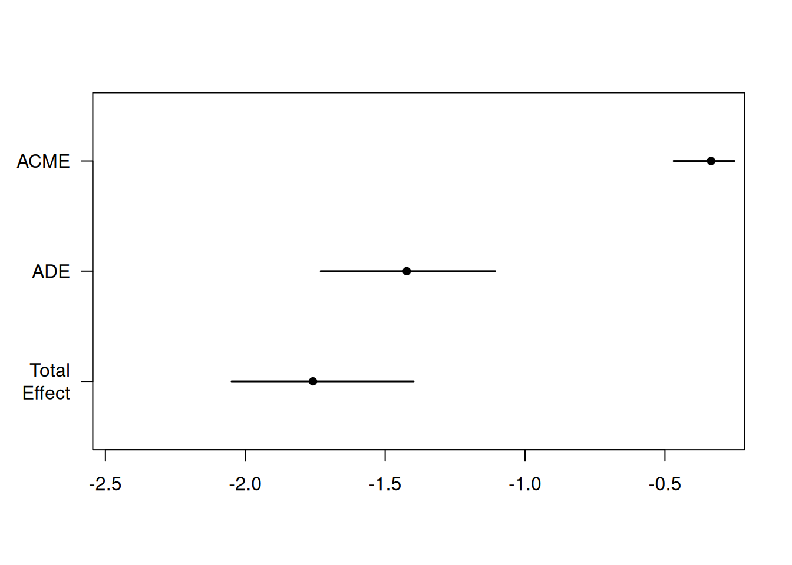

5 Traditional mediation analysis
Objective of this session
- To learn how to conduct mediation analysis using the traditional approaches.
- Understanding the assumptions and limitations of the methods.
The purpose of mediation analysis is to determine if the effect of a treatment (A) on an outcome (Y) can be explained by a third mediating variable (M). Thus, mediation analysis not only answers whether two variables are related, but also why.
This can be visualized in the following figures.
Overall relationship between A and Y:
Relationship between A and Y through M:
5.1 Traditional approaches for mediation analysis
The two traditional approaches to mediation analysis are the difference method and the product method; also known as the Baron & Kenny-method @baron_moderatormediator_1986.
The traditional approach use these equations for mediator and outcome (for the case of a continuous mediator and a continuous outcome)
Mediator-model:
\(E(M|A=a, C=c) = \beta_0 + \beta_1a + \beta_2c\) (3.1)
Outcome model with adjustment for mediator:
\(E(Y|A=a, M=m, C=c) = \theta_0 + \theta_1a + \theta_2m + \theta4c\) (3.2)
Outcome model without adjustment for mediator:
\(E(Y|A=a, C=c) = \theta_0' + \theta_1'a + \theta4'c\) (3.3)
Note:
total effect=\(\theta_1'\) , that is the total effect of the independent variable on the dependent variable
direct effect=\(\theta_1\)’, that is the effect of the independent variable on the dependent variable that is not mediated by the mediator
mediation effect=\(\beta1*\theta_2\) (the product method)
mediation effect=’\(\theta_1'-\theta_1\) (the difference method)
Note: The terms ‘mediation effect’ and ‘indirect effect’ are used synonymously.
5.2 An example
In this session, we will use an example to address a mediation research question using both traditional approaches.
It has been suggested that physical activity is associated with improved cardiovascular health. The predominant hypothesis is that physical activity contributes to weight reduction, which in turn improves cardiovascular function and lowers resting pulse rate. Therefore, we aim to investigate the extent to which the effect of physical activity on resting pulse rate is mediated by BMI.
The situation is depicted by below figure.
How much does BMI explain the relation between physical activity and pulse rate?
Example Dataset: A Brief Overview
We’ll explore the relationship between physical activity and pulse in the National Health and Nutrition Examination Survey (NHANES) dataset, which has been modified for this course with simulated variables.
To try this out in practice, we load the NHANES dataset, only keep the variables we need for the example.
The variables used in the dataset:
exposure of interest (a): physical activity (continuous variable)
outcome (y): Pulse (continuous variable)
mediator (m): BMI (continuous variable)
Note that the example is created to demonstrate the methods, and there is no clinical relevance of the results. For the convenience of analysis, we have transformed the mediator (m) and outcome variable (y) so that they follow a normal distribution.
Four demographic variables are considered in the analysis: age, gender, education, and smoking. We assume that adjusting for these four confounding is sufficient to block the backdoor paths. Further discussion on confounding adjustment will be covered in the following session.
# load the data
nhanes <- read_csv(here::here("data/NHANES.csv"))Rows: 10000 Columns: 76
── Column specification ────────────────────────────────────────────────────────
Delimiter: ","
chr (31): SurveyYr, Gender, AgeDecade, Race1, Race3, Education, MaritalStatu...
dbl (45): ID, Age, AgeMonths, HHIncomeMid, Poverty, HomeRooms, Weight, Lengt...
ℹ Use `spec()` to retrieve the full column specification for this data.
ℹ Specify the column types or set `show_col_types = FALSE` to quiet this message.library(dplyr)
# keep the variables used in the analyses
data <- nhanes %>%
dplyr::select(
ID,
w1 = Age,
w2 = Gender,
w3 = Education,
w4 = Smoke100,
a = PhysActive,
m = BMI,
y = Pulse,
y2 = Diabetes
) %>%
na.omit() # Physical activity is a binary variable, dichotomized as 'Yes' or 'No'.
table(data$a)
No Yes
3260 3656 # check the distribution of outcome
summary(data$y) Min. 1st Qu. Median Mean 3rd Qu. Max.
40.00 64.00 72.00 72.45 80.00 136.00 hist(data$y)# check the distribution of mediation
summary(data$m) Min. 1st Qu. Median Mean 3rd Qu. Max.
15.02 24.10 27.80 28.80 32.22 81.25 hist(data$m)# check the education categories and relevel
table(data$w3)
8th Grade 9 - 11th Grade College Grad High School Some College
417 858 2028 1447 2166 data$w3 <- relevel(factor(data$w3), ref = "College Grad")5.3 Method 1: Baron & Kenny (the product method)
According to Baron and Kenny (1986) @baron_moderatormediator_1986, the following criteria need to be satisfied for a variable to be considered a mediator:
- The exposure should be associated with the mediator.
- In the model for the outcome that includes both the exposure and mediator: the mediator should be associated with the outcome.
- In the model for the outcome that includes only the exposure: the exposure should be associated with the outcome.
- When controlling for the mediator, the association between the exposure and outcome should be reduced, with the strongest demonstration of mediation occurring when the path from the exposure to the outcome, when controlling for the mediator is zero.
The following shows the basic steps for mediation analysis suggested by Baron & Kenny.
5.3.1 Step 1: Estimate the relationship between A on M (path a)
That is to check the relation between exposure (physical activity) and the mediator (BMI), which corresponds to criteria 1. A mediation makes sense only if A affects M. If A and M have no relationship, M is just a third variable that may or may not be associated with Y.
As the mediator is a continuous variable, we can build a linear regression model, adjusting for confounders on the pathway between A and M.
\((E(M|A=a, C=c)\) = \(\beta_0\) + \(\beta_1a\) + \(\beta_2c\) (3.1)
fita <- lm(m ~ a + w1 + w2 + w3 + w4, data = data)
summary(fita)
Call:
lm(formula = m ~ a + w1 + w2 + w3 + w4, data = data)
Residuals:
Min 1Q Median 3Q Max
-15.624 -4.526 -1.104 3.431 50.612
Coefficients:
Estimate Std. Error t value Pr(>|t|)
(Intercept) 28.467603 0.323923 87.884 < 2e-16 ***
aYes -1.643518 0.170461 -9.642 < 2e-16 ***
w1 0.012135 0.004819 2.518 0.011827 *
w2male 0.274867 0.160396 1.714 0.086633 .
w38th Grade 1.271955 0.365283 3.482 0.000501 ***
w39 - 11th Grade 1.084541 0.281211 3.857 0.000116 ***
w3High School 1.538987 0.234533 6.562 5.70e-11 ***
w3Some College 1.381674 0.207826 6.648 3.19e-11 ***
w4Yes -1.056643 0.163957 -6.445 1.24e-10 ***
---
Signif. codes: 0 '***' 0.001 '**' 0.01 '*' 0.05 '.' 0.1 ' ' 1
Residual standard error: 6.586 on 6907 degrees of freedom
Multiple R-squared: 0.0338, Adjusted R-squared: 0.03268
F-statistic: 30.2 on 8 and 6907 DF, p-value: < 2.2e-16Here, we see that physical activity is negatively associated with BMI (an increase of 1 unit in physical activity is associated with a 1.64 unit decrease in BMI). Individuals who are physically active have an average BMI that is 1.64 kg/m2 lower than those who are inactive, holding all other variables constant.
5.3.2 Step 2: Estimate the relationship between M on Y controlling for A (path b)
That is to build the model between BMI and pulse rates, controlling for physical activity. This step corresponds to criteria (ii).
\((E(Y|A=a, M=m, C=c) = \theta_0 + \theta_1a + \theta_2m + \theta4c\) (3.2)
fitb <- lm(y ~ a + m + w1 + w2 + w3 + w4, data = data)
summary(fitb)
Call:
lm(formula = y ~ a + m + w1 + w2 + w3 + w4, data = data)
Residuals:
Min 1Q Median 3Q Max
-33.455 -8.139 -0.965 7.022 72.177
Coefficients:
Estimate Std. Error t value Pr(>|t|)
(Intercept) 73.580916 0.819142 89.827 < 2e-16 ***
aYes -1.422879 0.298167 -4.772 1.86e-06 ***
m 0.203864 0.020907 9.751 < 2e-16 ***
w1 -0.127155 0.008377 -15.178 < 2e-16 ***
w2male -3.728063 0.278752 -13.374 < 2e-16 ***
w38th Grade 0.458752 0.635246 0.722 0.470218
w39 - 11th Grade 2.113914 0.489138 4.322 1.57e-05 ***
w3High School 0.896878 0.408775 2.194 0.028264 *
w3Some College 1.388716 0.362258 3.834 0.000127 ***
w4Yes 1.520113 0.285735 5.320 1.07e-07 ***
---
Signif. codes: 0 '***' 0.001 '**' 0.01 '*' 0.05 '.' 0.1 ' ' 1
Residual standard error: 11.44 on 6906 degrees of freedom
Multiple R-squared: 0.07538, Adjusted R-squared: 0.07418
F-statistic: 62.56 on 9 and 6906 DF, p-value: < 2.2e-16BMI is positively associated with pulse rates after adjusting for physical activity, each one-unit increase in BMI is associated with a 0.20-unit increase in pulse rate. Physical activity remains its negative association with pulse rates.
5.3.3 Step 3: Estimate the relationship between A on Y (path c)
That is to build the model between physical activity and pulse levels, without adjusting for the BMI. The only difference between step 2 and step 3 is that mediator is not included in the model.
\((E(Y|A=a, C=c)\) = \(\theta_0'\) + \(\theta_1'a\) + \(\theta4'c\) (3.3)
fitc <- lm(y ~ a + w1 + w2 + w3 + w4, data = data)
summary(fitc)
Call:
lm(formula = y ~ a + w1 + w2 + w3 + w4, data = data)
Residuals:
Min 1Q Median 3Q Max
-32.986 -8.122 -0.982 7.106 72.020
Coefficients:
Estimate Std. Error t value Pr(>|t|)
(Intercept) 79.38443 0.56664 140.095 < 2e-16 ***
aYes -1.75793 0.29819 -5.895 3.92e-09 ***
w1 -0.12468 0.00843 -14.789 < 2e-16 ***
w2male -3.67203 0.28058 -13.087 < 2e-16 ***
w38th Grade 0.71806 0.63900 1.124 0.26117
w39 - 11th Grade 2.33501 0.49193 4.747 2.11e-06 ***
w3High School 1.21062 0.41027 2.951 0.00318 **
w3Some College 1.67039 0.36356 4.595 4.41e-06 ***
w4Yes 1.30470 0.28681 4.549 5.48e-06 ***
---
Signif. codes: 0 '***' 0.001 '**' 0.01 '*' 0.05 '.' 0.1 ' ' 1
Residual standard error: 11.52 on 6907 degrees of freedom
Multiple R-squared: 0.06265, Adjusted R-squared: 0.06157
F-statistic: 57.71 on 8 and 6907 DF, p-value: < 2.2e-16We can see that physical activity is associated with lower pulse levels. Specifically, if someone is physically active (compared to someone who is not), pulse decreases by 1.76 units.
Based on the models, we can estimate the direct effect and indirect effect:
- direct effect = \(\theta_1\)
- indirect effect = \(\beta_1 \theta_2\)
- total effect = \(\theta_1'\)
The direct effect (\(\theta_1\)) of physical activity on pulse levels can be assessed by the coefficient of physical activity in model b.
direct_ma <- fitb$coefficients[2]
direct_ma aYes
-1.422879 The indirect effect can be assessed by calculating the product of \(\beta_1\) \(\theta_2\). In this example, the indirect effect between physical activity and pulse levels through BMI is -0.34.
indirect_ma <- fita$coefficients[2] * fitb$coefficients[3]
indirect_ma aYes
-0.335054 The total effect (\(\theta_1'\)) of physical activity on pulse levels can be assessed by the coefficient of physical activity in model c, which is -1.76. You might have noticed the total effect also equals the sum of the direct effect and indirect effect.
total_ma <- fitc$coefficients[2]
total_ma aYes
-1.757933 5.4 Method 2: Difference approach
The difference approach is more commonly used in epidemiology. And the rational of this approach is to compare the effect of A on Y without and with adding M in the models.
If a mediation effect exists, the effect of A on Y will be attenuated when M is included in the regression, indicating the effect of A on Y goes through M. If the effect of A on Y completely disappears, M fully mediates between A and Y (full mediation). If the effect of A on Y still exists, but in a smaller magnitude, M partially mediates between A and Y (partial mediation).
Back to the example, the indirect effect will be the coefficient of physical activity in model c (without adjusting for m) minus the coefficient of physical activity in model b (adjusting for m), which equals to -0.34.
indirect_mb <- fitc$coefficients[2] - fitb$coefficients[2]
indirect_mb aYes
-0.335054
Note
The algebraic equivalence of the indirect effect using the product method and the difference method will coincide for a continuous outcome on the difference scale (MacKinnon 1995). However, the two methods diverge when using a binary outcome and logistic regression. (MacKinnon and Dwyer 1993).
Note
Recall the four criteria suggested by Baron and Kenny. One of the criteria is that ‘Path C must be significantly different from 0 to ensure there is a total effect between X and Y’. However, this step can be controversial. Even if we don’t find a significant association between X and Y, we could proceed to the next step if we have a strong theoretical basis for their relationship.
Group work - 5 minutes
- Discuss with your group about the two traditional approaches, did you get the same results?
- Discuss the scenarios under which there might be no significant association between A and Y.
5.4.1 Use mediation packages
Now we have estimated the direct and indirect effect using the product and the difference methods.You might have noticed what you got so far are only point estimates, but what if you want to see if this mediation effect is statistically significant (different from zero or not)?
To do so, there are two main approaches: the Sobel test @sobel_asymptotic_1982 and bootstrapping @preacher_spss_2004.
Here we will demonstrate that we can use the mediate() function in ‘mediation’ package @tingley_mediation_2014 to conduct mediation analysis. One of the very good options to conduct mediation analysis using the mediation package is we can get confidence interval by bootstrapping.
Let’s load up the R packages.
library(mediation) # Mediation packageLoading required package: MASS
Attaching package: 'MASS'The following object is masked from 'package:dplyr':
selectLoading required package: Matrix
Attaching package: 'Matrix'The following objects are masked from 'package:tidyr':
expand, pack, unpackLoading required package: mvtnormLoading required package: sandwichmediation: Causal Mediation Analysis
Version: 4.5.0mediate() takes two model objects as input (\(A \rightarrow M\) and \(A + M \rightarrow Y\)) and we need to specify which variable is an IV (treatment) and a mediator (mediator). For bootstrapping, set boot = TRUE and sims to at least 500.
set.seed(260524)
# Fit mediator model
lm_m <- lm(m ~ a + w1 + w2 + w3 + w4, data = data)
# Fit outcome model
lm_y <- glm(y ~ a + m + w1 + w2 + w3 + w4, data = data)
# Run mediation analysis
results <- mediate(lm_m, lm_y, treat = "a", mediator = "m", boot = TRUE, sims = 10) #set simulation for 10 for time effecacyWarning in mediate(lm_m, lm_y, treat = "a", mediator = "m", boot = TRUE, :
treatment and control values do not match factor levels; using No and Yes as
control and treatment, respectivelyRunning nonparametric bootstrapsummary(results)
Causal Mediation Analysis
Nonparametric Bootstrap Confidence Intervals with the Percentile Method
Estimate 95% CI Lower 95% CI Upper p-value
ACME -0.335 -0.469 -0.25 <2e-16 ***
ADE -1.423 -1.731 -1.11 <2e-16 ***
Total Effect -1.758 -2.049 -1.40 <2e-16 ***
Prop. Mediated 0.191 0.155 0.29 <2e-16 ***
---
Signif. codes: 0 '***' 0.001 '**' 0.01 '*' 0.05 '.' 0.1 ' ' 1
Sample Size Used: 6916
Simulations: 10 ADE stands for average direct effects. It describes the direct effect of the A on the Y when controlling for the mediator. Note this estimate is the same as the coefficient We got in the product and difference method. But be aware we are able to get confidence interval and significance levels for the indirect effect, not only its two individual parts by bootstrapping. This is something we need for reporting the mediation.
ACME stands for average causal mediation effects. This is the indirect effect of the IV on the DV that goes through the mediator. Note that ACME estimated to be -0.34, which is the same to the traditional approached we just used.
Total Effect stands for the total effect (direct + indirect) of the IV onto the DV. We can also get it by adding the ACME () and the ADE () to receive the total effect.
Prop. Mediated describes the proportion of the effect of the IV on the DV that goes through the mediator. It’s calculated by dividing the ACME (-0.34) by the total effect (-1.76) and yields 0.19. The result suggests the mediator (BMI) explains 19% proportion of the effect of physical activity on pulse rate . We will talk more about proportion mediation in the next session.
# We can also plot the estimates
plot(results)
For details of the mediate() package, please refer to @tingley_mediation_2014.
5.5 Limitations of the traditional approach
- Non-linearity
- Interactions
- Multiple mediators
5.6 When can we use the traditional approach
When fulfill the criteria, simple tools like regression can be used to estimate a causal mediation effect:
- no unmeasured confounding
- no exposure-mediator interaction
- linear relationship
- rare binary outcome